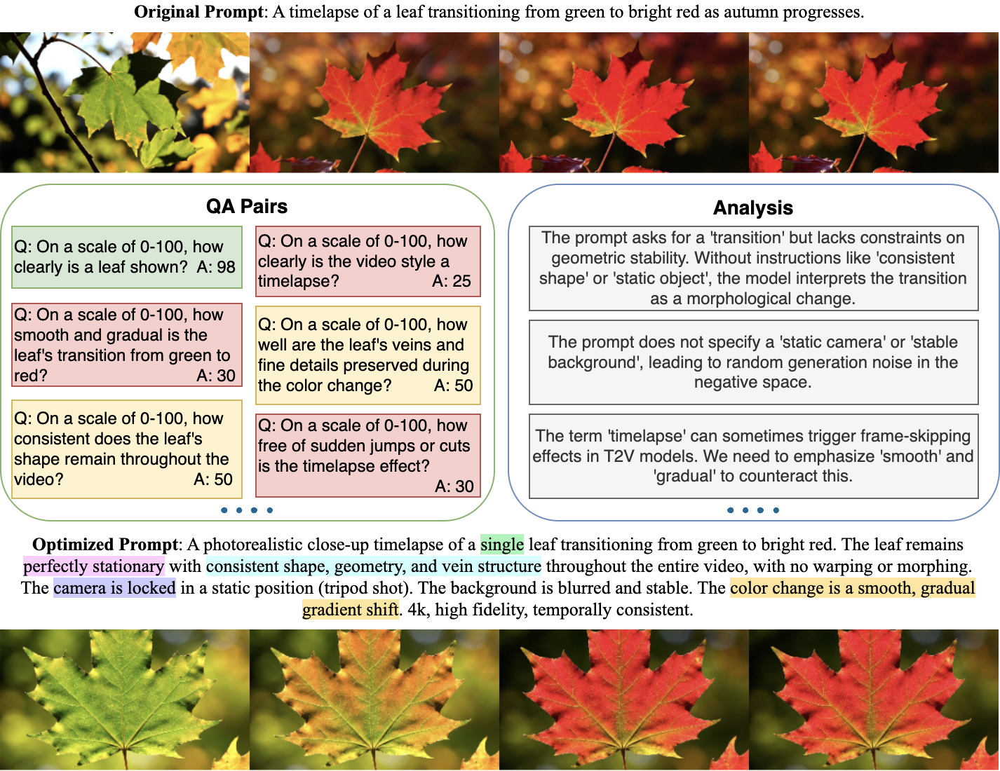
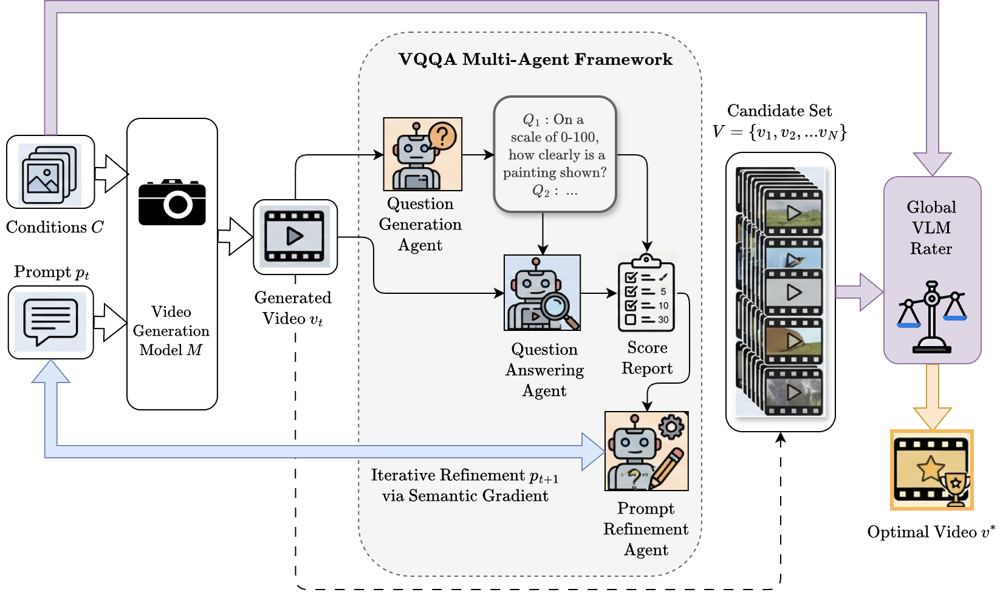

Despite rapid advancements in video generation models, aligning their outputs with complex user intent remains challenging. Existing test-time optimization methods are typically either computationally expensive or require white-box access to model internals. To address this, we present VQQA (Video Quality Question Answering) , a unified, multi-agent framework generalizable across diverse input modalities and video generation tasks. By dynamically generating visual questions and using the resulting Vision-Language Model (VLM) critiques as semantic gradients, VQQA replaces traditional, passive evaluation metrics with human-interpretable, actionable feedback. Extensive experiments demonstrate that our method effectively isolates and resolves visual artifacts, substantially improving generation quality. Applicable to both T2V and I2V tasks, our pipeline achieves absolute improvements of +11.57% on T2V-CompBench and +8.43% on VBench2 over vanilla generation.
Vanilla Generation
VQQA Generation
Vanilla Generation
VQQA Generation
Vanilla Generation
VQQA Generation
Vanilla Generation
VQQA Generation
Vanilla Generation
VQQA Generation

Figure 2: Multi-Agent VQQA Pipeline Overview
The VQQA framework: Given generation conditions C and a prompt pt, the model M produces a video vt. The multi-agent framework uses a Question Generation (QG) agent to formulate visual queries Q and a Question Answering (QA) agent to evaluate the video and produce a score report. These outputs inform the Prompt Refinement (PR) agent, which uses semantic gradients to update the prompt for the next iteration. Finally, a Global VLM Rater assesses the candidate set of generated videos against the original conditions to select the optimal video v*.
@misc{song2026vqqaagenticapproachvideo,
title={VQQA: An Agentic Approach for Video Evaluation and Quality Improvement},
author={Yiwen Song and Tomas Pfister and Yale Song},
year={2026},
eprint={2603.12310},
archivePrefix={arXiv},
primaryClass={cs.CV},
url={https://arxiv.org/abs/2603.12310},
}